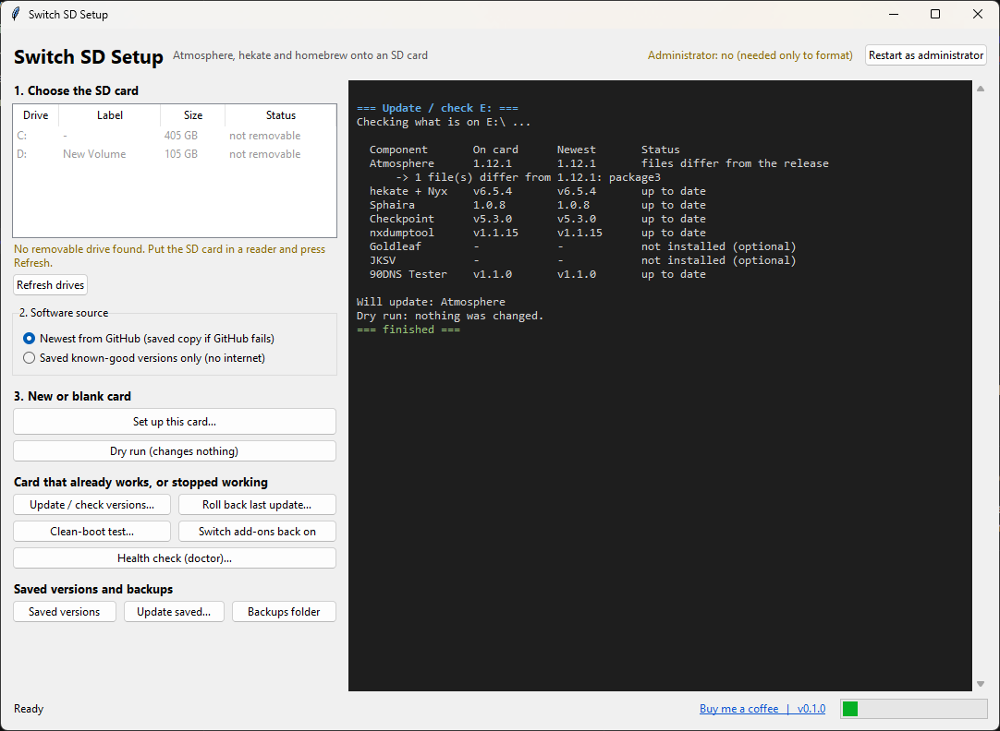

One Windows app to build, update and repair an Atmosphere and hekate card. It checks everything,
backs up before it changes anything, and can undo an update.
Free and open source (MIT). Beta: please keep a backup of anything you care about.

What it does
Set up a new card
Backs the card up, optionally formats it, installs Atmosphere, hekate, Sphaira and tools from their official releases, verifies it, and hands you a checklist for the console.
Update what you have
Finds out which version of each part is on the card, even if you built it by hand. Snapshots first, updates only what is behind, and rolls back with one click.
Fix a card that broke
Reads crash reports, checks firmware against your Atmosphere version, checks the emuMMC and your NAND backup, and runs a clean-boot test without deleting anything.
Works when GitHub does not
Keeps saved known-good copies of every component, hash-checked before use, and falls back to them automatically.
Three steps
Download the zip from the latest release and open SwitchSDSetup.exe.
Pick your card and press Dry run. It shows every step and changes nothing.
Press Set up this card, then follow the saved checklist on the console.
Safe by design
Only removable drives can be formatted; the system drive and the drive the app runs from are always refused.
A format needs a fresh verified backup of that exact card and a typed confirmation.
Updates save what they overwrite first. Clean-boot renames folders; nothing is deleted.
Downloads come from each project's GitHub releases and are checked against the published SHA-256.
No telemetry. The only network calls are to GitHub.
This tool does not include or help with signature patches, game downloads, keys or firmware.
It is for setting up your own console.